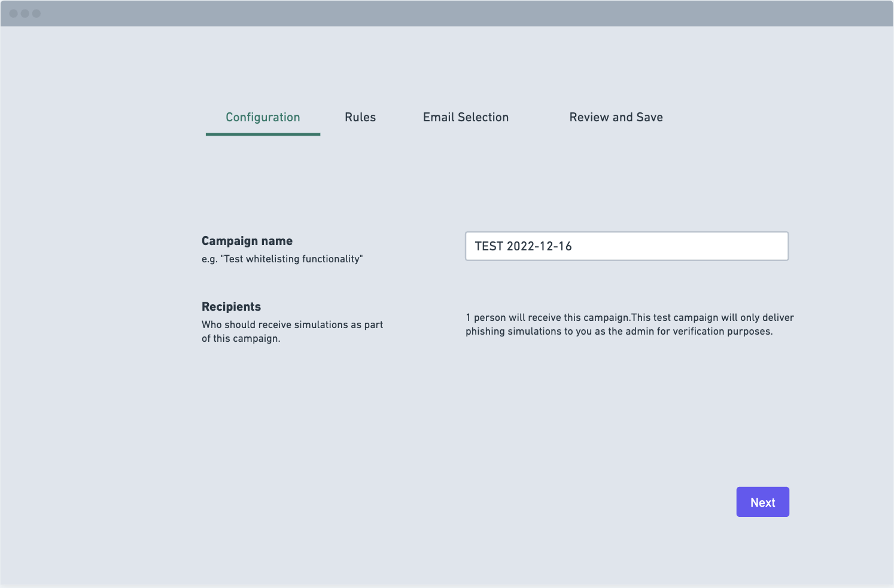
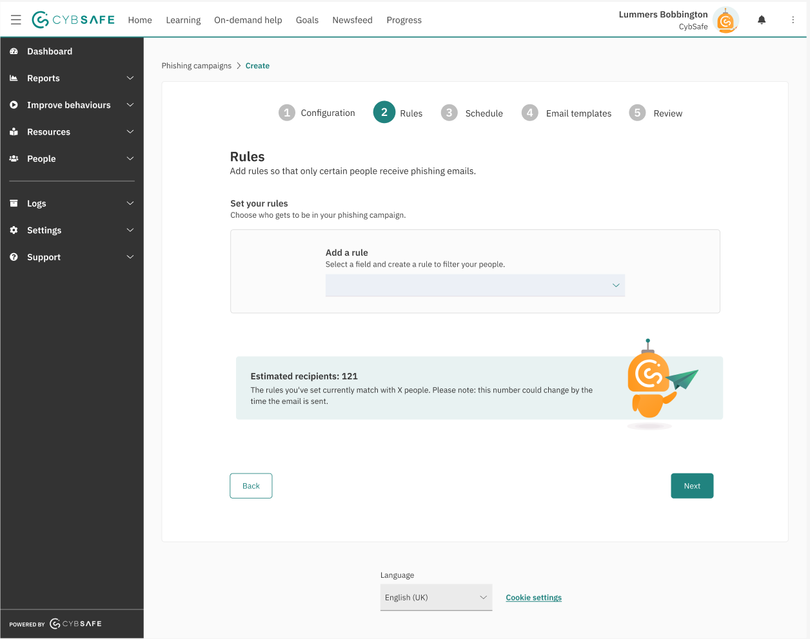
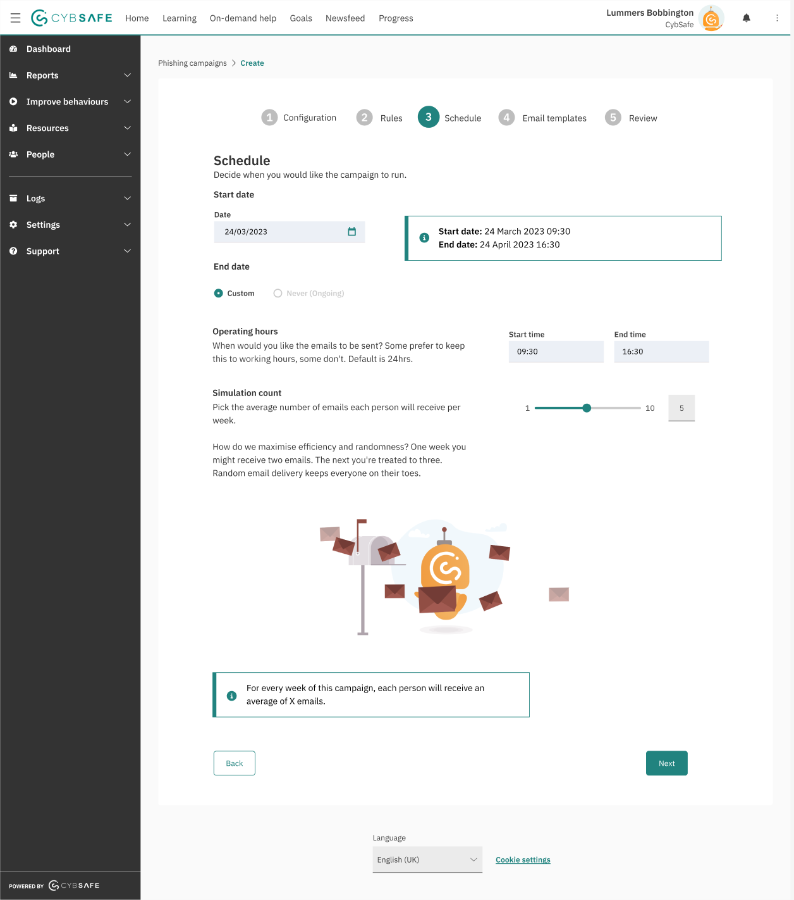

Empowering users to create effective Phishing campaigns

Summary:
Re-built the phishing campaign flow to enhance user engagement and effectiveness. I led end-to-end development and collaborated with cross-functional teams for seamless integration.
My role:
Product Designer
Skills:
- + User Experience
- + Visual Design
- + User testing/research
- + Design systems
- + Prototyping
Team:
- + Myself
- + 1 Product Manager
- + 1 Customer Success Manager
- + 1 Researcher
- + 2 Front-end engineers
- + 2 Back-end engineers
Overview
In an 8-week project, I served as the product designer, leading various tasks including:
- + Conducting research in collaboration with behavioural scientists
- + Facilitating usability studies
- + Leading workshops on ideation and refinement
- + Developing UI elements, visual assets, and interaction designs.
Problem
The existing phishing feature had become outdated and ineffective, with users finding the flow difficult to understand and the simulation limited in effectiveness. Key organisations were due to renew, and their decisions were heavily influenced by the design of this feature.
Business Goals
- + Bolster the existing key sales feature to meet industry standards.
- + Maintain renewals and secure $64k worth of ARR.
- + Boost engagement with an outdated feature.
- + Address user pain points and improve overall engagement.
- + Increase usage of related features such as behavior reports.
User Goals
- + Easier-to-understand phishing campaign flow
- + More impactful simulations with improved previews
- + Better context on campaign options
- + Addressed pain points for a better experience
- + Enhanced control over targeted users
The process of problem solving

The first key step was to reach out to key stakeholders in the business to understand more of why these processes had fallen behind, what problems were being reported and what areas needed to be addressed etc. This was to establish a baseline of the organisation's understanding and also establish next steps.
User interviews:
The next step was to engage with admins who had expressed concerns or a keen interest in utilising phishing techniques. Our aim was to understand their specific challenges and experiences firsthand, gaining insight into their perspectives and needs.
Key Insights:
- + The first thing we noticed was that admins were presented with too many choices upon entering the flow and this meant they were reluctant to make a choice overall
- + The terminology was difficult to understand - the frequency of phishing reports was not clear so admins were worried about spamming their organisation with loads of fake emails
- + Admins did not understand the three campaign types or what they offered so we needed to add further clarity
Thought process
At this point, our squad had limited knowledge about phishing, as we were newly formed. The phishing feature had been part of the platform for over three years without any updates. During its initial development, the company lacked the resources to further improve it. Consequently, user needs had changed over time, and the codebase required restructuring.
I spoke to stakeholders to further understand how it had been built and why it had been built that way. I then wanted to speak to users to understand how they used phishing and to validate the problems that had been flagged from customer success.
Initial Phishing campaign flow:

Usability studies:
Following discussions with our team and users, we decided to observe users as they navigated through the initial phishing process. This hands-on approach offered valuable insights, helping us better grasp the challenges we faced and the potential opportunities ahead. We realised that while user interviews had pinpointed some issues, observing users during actual campaigns was crucial to gain deeper insights and address underlying concerns effectively.
Key Insights:
- + "I'm concerned about inundating our organisation with numerous phishing emails." Admins were uncertain about the volume and content of emails they might send, fearing excessive distribution.
- + The campaign's start time isn't clear - shouldn't it begin on the same day?" There was confusion regarding the commencement and duration of campaigns, requiring clearer communication.
- + "I'd like to preview campaigns before sending them out." Admins sought a testing option to evaluate the service before launch.
- + "I need more than just groups; it would be beneficial to have finer control over targeting vulnerable areas." Admins desired increased precision in selecting and targeting potential vulnerabilities within the organisation.
Thought process
Having initially dived into the problem by speaking to customer success and other key stakeholders and also speaking to users who had reached out we decided to perform usability studies of the current platform to give greater context to the issues both reported and to get a more developed idea of where the current flows were lacking and the areas of opportunity. This proved useful as we discovered insights that meant we were confident to proceed.
User flows:
I began by outlining task flows to grasp the problem statement and visualise potential flow structures, focusing on key elements. Next, I analysed the information architecture alongside the PM to comprehend the campaign foundation and key areas. We then discussed it as a squad in order to refine the initial flows, condensing them into manageable steps that would deliver maximum value efficiently.
The different phishing flows

Thought process
Mapping out the flows based on what currently exsisted and what we could then add helped to clarify to stakeholders what we were aiming to achieve and to visualise the work so everyone was onboard with the general scope of work and the solutions we had prioritised.
I followed the steps below in the design phase:
- 1. Paper Sketches
- 2. Low-fidelity wireframes with variations (Discussion with engineering)
- 3. Mid-fidelity wireframes
- 4. Hi-fidelity design
Phishing flow wireframes:



Thought process
Having defined the problem areas and user pain points, I moved on to wireframing. I started with pencil sketches and then used Whimsical to create rough flows. I developed a range of flows and presented them to the squad. We collaboratively evaluated and refined the designs, ensuring they were feasible and user-centered. From this point I then reached out to the users we had initially interviewed to get their thoughts and to help further refine the design so that is targetted key pain points.
Refining the Hi-fidleity designs
We overhauled the flow and produced a simple step process in order to help simplify the process by taking the three campaigns and putting them into separate flows as well as offering more context on what each does - this was also supplemented by introducing supplementary pages.
Phishing flow wireframes:
A large issue was the lack of clarity for admins - who were they targeting with campaigns? How were we targeting these specific people? Etc We provided a dynamic box that updated based on the chosen rules and helped to improve clarity and reduce frustration.
We also helped to improve the campaign set-up - this involved a lot of back-end fixes as campaigns did not start instantaneously and would start at the beginning of the week. We helped to clarify the the total number of emails sent each week to assure admins they wouldn't spam their organisation.
A large issue was the lack of clarity for admins - who were they targeting with campaigns? How were we targeting these specific people? Etc We provided a dynamic box that updated based on the chosen rules and helped to improve clarity and reduce frustration.
The next step was to release this as a contained BETA to the specific users who had fed back and were due to renew. This meant we could get feedback quickly and get direct feedback on the implemented designs.
Feedback from Beta users
- + 85% of beta users reported an improvement in the overall user experience of the phishing feature.
- + 80% of beta testers found the new interface more intuitive and easier to navigate.
- + 78% of users stated that the clarity of the phishing campaign setup process had significantly improved.
User Engagement and Satisfaction:
- + 60% increase in successful phishing campaign completions compared to the old system.
- + 55% reduction in user-reported issues and confusion during campaign setup.
- + 45% decrease in the time required to set up a phishing campaign.
Feature Effectiveness:
Post Beta results
- + Usage of the Report pages used rose from 6% up to 11% overall - this meant there was a reduction in the churn rate as well as improved levels of engagement for a key part of the product.
- + Improved phishing flow ARR was valued 64k - This also helped to retain important customers dependant on this feature.
- + Phishing campaign engagement rose by 21% - This helped improve retention of customers due to renew.